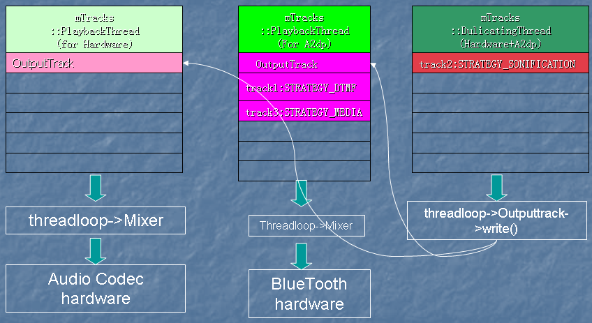

多路输出处理
开启多线程
-
AudioPolicyManagerBase::handleA2dpConnection和AudioPolicyManagerBase::handleA2dpDisconnection用来处理蓝牙连接的情形。
-
当设备连接时，会先调用AudioPolicyService::openOutput打开设备，随后调用AudioPolicyService::openDuplicateOutput进行双线程处理。
-
AudioPolicyManagerBase会做出以下动作：
-
首先打开（或创建）蓝牙输出线程A2dpOutput
-
以HardwareOutput和A2dpOutput作为参数，调用openDuplicateOutput，创建 DuplicatingThread
-
把属于STRATEGY_MEDIA类型的Track移到A2dpOutput中
-
把属于STRATEGY_DTMF类型的Track移到A2dpOutput中
-
把属于STRATEGY_SONIFICATION类型的Track移到DuplicateOutput中
AudioPolicyManagerBase::handleA2dpConnection
status_t AudioPolicyManagerBase::handleA2dpConnection(AudioSystem::audio_devices device,
const char *device_address)
{
// when an A2DP device is connected, open an A2DP and a duplicated output
AudioOutputDescriptor *outputDesc = new AudioOutputDescriptor();
outputDesc->mDevice = device;
mA2dpOutput = mpClientInterface->openOutput(&outputDesc->mDevice, &outputDesc->mSamplingRate,
&outputDesc->mFormat, &outputDesc->mChannels,
&outputDesc->mLatency, outputDesc->mFlags);
if (mA2dpOutput) {
// add A2DP output descriptor
addOutput(mA2dpOutput, outputDesc);
// set initial stream volume for A2DP device
applyStreamVolumes(mA2dpOutput, device);
if (a2dpUsedForSonification()) {
// 打开双线程
mDuplicatedOutput = mpClientInterface->openDuplicateOutput(mA2dpOutput, mHardwareOutput);
}
if (mDuplicatedOutput != 0 ||
......
} else {
......
}
} else {
......
return NO_INIT;
}
......
return NO_ERROR;
}
处理线程
-
AudioFlinger中有一个特殊的线程类：DuplicatingThread，从类结构图可以发现，它是MixerThread的子类。当系统中有两个设备要同时输出时，DuplicatingThread将被创建，通过IAudioFlinger的openDuplicateOutput方法创建DuplicatingThread。
-
DuplicatingThread的构造方法会调用DuplicatingThread::addOutputTrack创建第一个OutputTrack对象并加入到成员变量mOutputTracks的容器。
-
之后构造方法会返回DuplicatingThread对象，再调用一次addOutputTrack方法创建第二个OutputTrack对象并加入容器。
-
以上创建的两个OutputTrack对象同时又会被加入到两个MixerThread线程中。
-
当DuplicatingThread::threadLoop线程往两个OutputTrack对象写数据的同时，两个
MixerThread::threadLoop线程从中获取数据并输出到不同目标中。

AudioFlinger::openDuplicateOutput
int AudioFlinger::openDuplicateOutput(int output1, int output2)
{
Mutex::Autolock _l(mLock);
// 从线程队列中查找对应ID的线程对象
MixerThread *thread1 = checkMixerThread_l(output1);
MixerThread *thread2 = checkMixerThread_l(output2);
if (thread1 == NULL || thread2 == NULL) {
return 0;
}
int id = nextUniqueId();
DuplicatingThread *thread = new DuplicatingThread(this, thread1, id);
thread->addOutputTrack(thread2);
mPlaybackThreads.add(id, thread);
// 通知i/o设备变更
thread->audioConfigChanged_l(AudioSystem::OUTPUT_OPENED);
return id;
}
AudioFlinger::DuplicatingThread::addOutputTrack
void AudioFlinger::DuplicatingThread::addOutputTrack(MixerThread *thread)
{
int frameCount = (3 * mFrameCount * mSampleRate) / thread->sampleRate();
// 创建OutputTrack
OutputTrack *outputTrack = new OutputTrack((ThreadBase *)thread,
this, mSampleRate, mFormat,
mChannelCount, frameCount);
if (outputTrack->cblk() != NULL) {
thread->setStreamVolume(AudioSystem::NUM_STREAM_TYPES, 1.0f);
// 添加Track到容器中
mOutputTracks.add(outputTrack);
updateWaitTime();
}
}
{kind=link}